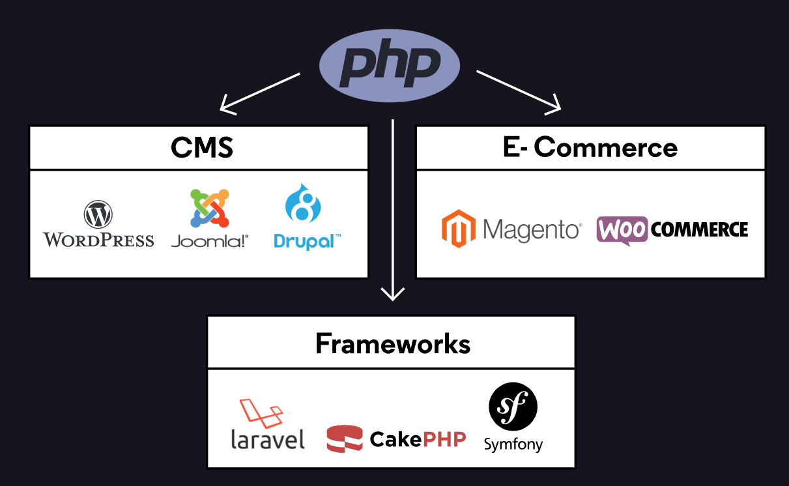
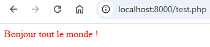
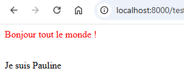
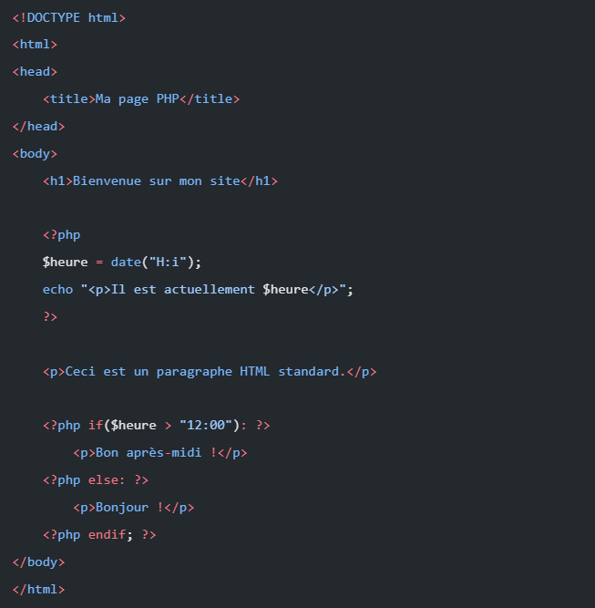
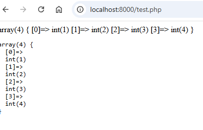
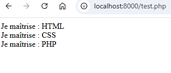
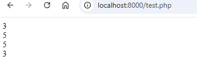
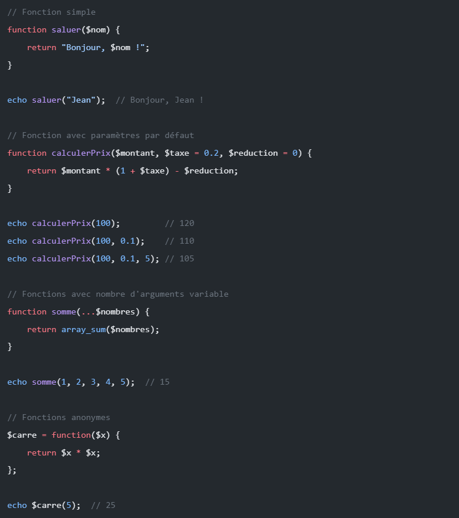

Les fondamentaux de PHP
PHP (Hypertext Preprocessor) est un langage de programmation côté serveur populaire, particulièrement adapté au développement web

Intro: L'utilisation de PHP
Langage côté serveur: Le code est exécuté sur le serveur avant d’envoyer le HTML au clientIntégration avec HTML: Peut être directement intégré dans les pages HTML- Compatibilité avec les bases de données
1. Syntaxe et structure de base
- A PHP script starts with
<?phpand ends with?><?php // Ton code PHP va ici ?> -
Les commentaires
<?php // Commentaires sur une ligne /* Commentaire sur plusieurs lignes */ ?> -
Chaque instruction se termine par un point-virgule
; -
echo- affiche le rendu sur le navigateur (HTML)<?php // L'instruction 'echo' permet d'afficher du texte ou du HTML à l'écran echo "<p style='color:red'>Bonjour tout le monde !</p>"; ?>
-
<br>- Saut de ligne HTML<?php echo "<p style='color:red'>Bonjour tout le monde !</p>"; echo '<br>'; echo "Je suis Pauline" ?>
-
phpinfo();- Affiche toutes les infos du php courant -
die();fonction die pour stopper l'exécution du scriptif(1!=1){ die(); } -
PHP keywords (e.g. if, else, echo, etc.), classes, functions, and user-defined functions are
not case-sensitive -
Intégration en HTML

2. Afficher des informations: echo VS var_dump
echo- Envoie du texte ou du HTML au navigateur.
⚠️ Attention : echo ne prend en charge que les valeurs simples (les booléens, les nombres, et les chaînes de caractères - string). Il "plantera" si tu essaies de lui donner un tableau complexe.
<?php
$nombre = 12;
$isTrue = true;
$string = "Hello";
// Echo affiche ces valeurs simples
echo $nombre . "<br>";
echo $isTrue . "<br>";
echo $string . "<br>";
?>
var_dump- pour le Debug.
C'est l'outil du développeur. Il sert à fouiller dans une variable pour afficher toutes ses infos (son type, sa taille, sa valeur). C'est indispensable pour lire des tableaux. (L'équivalent du console.log en JS).
<?php
$tableau = [1, 2, 3, 4];
// Affichage brut (sans la balise <pre>)
var_dump($tableau);
// Affichage propre (FORTEMENT RECOMMANDÉ)
// En encadrant le var_dump avec la balise HTML <pre>, l'affichage devient indenté et très lisible !
echo "<pre>";
var_dump($tableau);
echo "</pre>";
?>

- L'alternative :
print_r
Ancienne fonction qui permet aussi d'afficher le contenu d'un tableau de manière lisible. Elle donne moins d'informations techniques que var_dump. À connaître pour lire du vieux code, mais beaucoup moins utilisé aujourd'hui.
PHP
<?php
print_r($tableau);
?>
3. Variables & Types de données
a. Variables
- Commence toujours par
$ - Pas besoin de déclarer le type (texte, nombre..), PHP le devine tout seul
- Variable are case-sensitive ($age and $AGE are 2 different variables)
<?php
$prenom = "Pauline"; // String
$age = 38; // Number (Integer)
$estConnecte = true; // Booléen (Vrai ou Faux)
echo "Je m'appelle " . $prenom . " et j'ai " . $age . " ans.";
// Le point (.) sert à "concaténer" (coller) des textes et des variables ensemble.
?>
b. Constante
- Pas de symbole $ comme les variables
- S'écrit toujours en MAJUSCULES pour les différencier du reste
<?php
// NOUVELLE VERSION (Recommandée, très similaire à JavaScript)
const TAUX_TVA = 20;
const SITE_NOM = "Mon Super Projet";
// ANCIENNE VERSION (Avec la fonction define, tu la verras dans de vieux codes)
define('ANCIENNE_CONSTANTE', 37);
// Affichage : ATTENTION, il n'y a pas de $ pour les appeler !
echo "Le taux de TVA est de " . TAUX_TVA . "%.";
?>
c. Manipulation des chaînes et nombres
- Concaténation:
Se fait avec un point (.)
<?php
$animal = "chat";
// Concaténation (avec le point)
echo 'J\'ai un ' . $animal . ' à la maison.';
?>
- Interpolation
Entre guillemets doubles " ", PHP lit la variable directement à l'intérieur du texte.
<?php
$animal = "chat";
// Interpolation (uniquement avec les guillemets doubles " ")
echo "J'ai un $animal à la maison.";
?>
4. Conditions
Les conditions permettent d'exécuter un bout de code seulement si une affirmation est vraie. On utilise if (si), elseif (sinon si), et else (sinon).
- if - executes some code if 1 condition is true
- if...else - executes some code if a condition is true and another code if that condition is false
- if...elseif...else - executes different codes for more than 2 conditions
- switch statement - selects 1 of many blocks of code to be executed
<?php
$age = 15;
if ($age >= 18) {
echo "Tu es majeur.";
} elseif ($age == 17) {
echo "C'est pour bientôt !";
} else {
echo "Tu es mineur.";
}
?>
5. Tableaux (Arrays)
Les tableaux permettent de ranger plusieurs informations dans une seule variable. C'est là qu'on stocke les listes.
a. Tableau indexé
Chaque élément est rangé dans une case numérotée (l'index commence à 0).
<?php
$fruits = ["Pomme", "Banane", "Cerise"];
echo $fruits[0]; // Affiche "Pomme"
?>
b. Tableau associatif
Au lieu d'utiliser des numéros, on utilise des clés nommées (des étiquettes).
example: $tab = ["clé" -> "valeur"] -> $tab ["clé"]
<?php
$utilisateur = [
"prenom" => "Pauline",
"age" => 38,
"ville" => "Blois"
];
echo "Elle s'appelle " . $utilisateur["prenom"]; // Affiche "Alice"
?>
6. Boucles
a. For
- Quand on connait le nombre de tours
<?php for ($i = 0; $i < 5; $i++) { // i++ est un pas de 1 // ... code à exécuter 5 fois ... echo "Ceci est le tour numéro $i <br>"; } ?>
b. While
- Tant qu'une condition est vraie
<?php $i = 0; // Initialisation du compteur à 0 // Tant que $i est strictement inférieur à 5, la boucle continue while ($i < 5) { // Affiche le message avec la valeur actuelle de $i echo "Ceci est le tour numéro $i <br>"; // Incrémentation : on ajoute 1 à $i après l'affichage pour passer au tour suivant $i++; } ?>
c. Foreach
- Pour parcourir un tableau spécialement. Elle passe sur chaque élément, un par un, jusqu'à la fin
<?php $competences = ["HTML", "CSS", "PHP"]; foreach ($competences as $competence) { echo "Je maîtrise : $competence <br>"; } ?>
7. Opérateurs
a. Opérations arithmétiques
<?php
// Addition et Multiplication
echo 4 + 5; // Affiche 9
echo 4 * 2; // Affiche 8
// Peux aussi utiliser des variables
$a = 10;
$b = 5;
$resultat = $a - $b;
// Soustraction : la variable $resultat vaut 5
$division = $a / $b;
// Division : la variable $division vaut 2
?>
b. Incrémentation et décrémentation
L'incrémentation consiste à ajouter 1 à une variable, et la décrémentation à lui retirer 1. C'est extrêmement utilisé dans les boucles pour compter.
- La post-incrémentation ($nombre++) : PHP affiche ou utilise d'abord la variable, puis lui ajoute 1.
- La pré-incrémentation (++$nombre) : PHP ajoute d'abord 1, puis affiche ou utilise la variable.
<?php
$nombre = 3;
// POST-INCRÉMENTATION
echo $nombre++; // Affiche 3, puis $nombre devient 4
echo "<br>";
// PRÉ-INCRÉMENTATION
echo ++$nombre; // Ajoute 1 à 4 (devient 5), puis affiche 5
echo "<br>";
// DÉCRÉMENTATION (même logique, mais pour soustraire 1)
echo $nombre--;
// Affiche 5, puis passe à 4
echo "<br>";
echo --$nombre;
// Retire 1 (passe à 3), puis affiche 3
?>

c. Comparaison
Pour que tes conditions (if, elseif, else) fonctionnent, tu as besoin de comparer des valeurs.
- < : Strictement inférieur
- > : Strictement supérieur
- <= : Inférieur ou égal
- >= : Supérieur ou égal
Le piège classique de l'égalité et de la différence. Il faut être très attentif à la différence entre l'opérateur simple et l'opérateur "strict"
- :== (Égalité simple) : Compare uniquement la valeur.
- === (Égalité stricte) : Compare la valeur ET le type (nombre, texte, etc.).
- != (Différence simple) : Vérifie si les valeurs sont différentes
- !== (Différence stricte) : Vérifie si les valeurs OU les types sont différents
d. Logiques
Les opérateurs logiques permettent de tester plusieurs choses en même temps dans un seul if. Les trois plus importants à retenir sont le ET, le OU et le NON.
- ET Logique: && (ou and)
Il sert à vérifier si TOUTES les conditions sont vraies en même temps. Si une seule est fausse, le résultat global est faux.
<?php
$age = 20;
$aLePermis = true;
// Pour conduire, il faut avoir au moins 18 ans ET avoir le permis
if ($age >= 18 && $aLePermis === true) {
echo "Tu as le droit de conduire !";
} else {
echo "Tu ne peux pas prendre le volant.";
}
?>
- OU Logique: || (ou or)
Il sert à vérifier si AU MOINS UNE des conditions est vraie.
<?php
$jour = "samedi";
// C'est le week-end si on est samedi OU si on est dimanche
if ($jour === "samedi" || $jour === "dimanche") {
echo "C'est le week-end, on se repose !";
} else {
echo "Au travail !";
}
?>
- NON logique : ! (Point d'exclamation)
Il sert à inverser une condition (le vrai devient faux, et le faux devient vrai). On l'utilise très souvent pour dire "Si ce n'est PAS...".
<?php
$estBanni = false;
// Le "!" veut dire "Si la variable est fausse" ou "S'il n'est pas banni"
if (!$estBanni) {
echo "Bienvenue sur le site !";
} else {
echo "Accès refusé.";
}
// Un autre exemple très courant avec la fonction empty() qui vérifie si une variable est vide :
$pseudo = "DarkSasuke";
if (!empty($pseudo)) { // Se lit : "S'il n'est PAS vide"
echo "Ton pseudo est " . $pseudo;
}
?>
<?php
$x = 3;
$y = 2;
// Comparaisons simples de grandeurs
if ($x < $y) {
echo "x est plus petit que y";
} else if ($x > $y) {
echo "x est plus grand que y";
} else {
echo "ils sont égaux";
}
// Différence entre simple et strict
$x = 3;
$y = "3"; // Attention, ici c'est du texte !
// Test avec la différence simple (!=)
if ($x != $y) {
echo "Oui, ils sont différents";
} else {
echo "Non, ils sont pareils"; // C'est ceci qui s'affiche, car 3 et "3" ont la même valeur.
}
// Test avec la différence stricte (!==)
if ($x !== $y) {
echo "Oui, ils sont strictement différents"; // C'est ceci qui s'affiche, car le type n'est pas le même (nombre vs texte).
} else {
echo "Non, ils sont exactement pareils";
}
?>
- Fonctions
a. Créer et appeler une fonction de base
Une fonction est déclarée avec:
- le mot-clé function
- son nom
- parenthèses {}
💡Tip: Give the function a name that reflects what the function does!
<?php
function direBonjour() {
echo "Bonjour tout le monde ! <br>";
}
// Appel de la fonction
direBonjour();
?>
b. Paramètres (ou arguments)
Les paramètres sont des variables que l'on glisse à l'intérieur des parenthèses pour donner des informations à la fonction. Tu peux en mettre autant que tu veux, séparés par des virgules.
<?php
function saluer($prenom, $anneeDeNaissance) {
echo "Bonjour $prenom, tu es né(e) en $anneeDeNaissance. <br>";
}
saluer("Alice", 1995);
saluer("Bob", 1988);
?>
c. Paramètres avec une valeur par défaut
C'est très pratique : tu peux définir une valeur par défaut dans la création de ta fonction. Si tu appelles la fonction sans lui donner cet argument, elle utilisera la valeur par défaut.
<?php
// Si on ne donne pas de paramètre, $param vaudra "Quelqu'un" par défaut
function auRevoir($param = "Quelqu'un") {
return "Bye, $param ! <br>";
}
echo auRevoir(); // Affiche : Bye, Quelqu'un !
echo auRevoir("Paul"); // Affiche : Bye, Paul !
?>
d. Fonction avec Return
return arrête immédiatement l'exécution d'une fonction et renvoie la valeur à la ligne de code qui l'a appelée
- Pour les fonctions simple, anonyme
- Les fonctions fléchées n'ont pas besoin de return car elles sont automatiques
function saluer($nom) {
return "Bonjour, $nom !";
}
echo saluer("Jean"); // Bonjour, Jean !
d. Fonction anonyme
C'est une fonction qui n'a pas de nom. On la stocke directement dans une variable
<?php
$anonymousFunc = function() {
return "Je suis anonyme <br>";
};
// Pour l'appeler, on utilise la variable avec des parenthèses
echo $anonymousFunc();
?>
e. Fonction fléchée
Introduites plus récemment en PHP, elles permettent d'écrire des fonctions très courtes sur une seule ligne. Le return est automatique.
<?php
// syntaxe : fn(paramètres) => résultat_retourné
$addition = fn($a, $b) => $a + $b;
echo "Addition : " . $addition(3,6); // Affiche 9
?>
f. Fonction IIFE (Immediately Invoked Function Expression)
C'est une fonction anonyme qui s'enferme dans des parenthèses et s'exécute toute seule, immédiatement après avoir été lue par le serveur.
<?php
(function() {
echo "Je m'exécute automatiquement comme un grand <br>";
})();
?>
g. Fonction pour les tableaux
count($nombres); // Nombre d'éléments
array_push($nombres, 6); // Ajouter un élément
array_pop($nombres); // Retirer le dernier élément
sort($nombres); // Trier
array_reverse($nombres); // Inverser
implode(", ", $nombres); // Joindre les éléments
array_merge($nombres, [6, 7, 8]); // Fusionner des tableaux
h. Récapitulatif des fonctions
